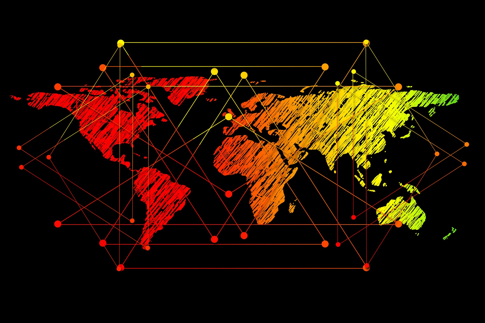

Enterprise Technology Transformations
Delivered by
Topnotix
Helping organizations modernize infrastructure, strengthen cybersecurity, and accelerate digital transformation.
SD-WAN Network Transformation
01
Services
Network Modernization | Secure Connectivity | SD-WAN Deployment
TTopnotix deployed a secure SD-WAN architecture connecting multiple enterprise branches with improved application performance, centralized network visibility, and enhanced security controls.
Technologies
Fortinet Secure SD-WAN | Network Analytics
Enterprise Infrastructure Modernization
02
Services
Datacenter Modernization | Infrastructure Virtualization | Disaster Recovery
Topnotix helped a manufacturing enterprise modernize its legacy datacenter environment by implementing virtualized infrastructure and automated disaster recovery. The new architecture improved system reliability, reduced operational costs, and enabled scalable infrastructure for future growth.
Technologies
VMware | Fortinet | Hybrid Infrastructure
Hybrid Cloud Transformation
03
Services
Datacenter Modernization | Infrastructure Virtualization | Disaster Recovery
Topnotix helped a manufacturing enterprise modernize its legacy datacenter environment by implementing virtualized infrastructure and automated disaster recovery. The new architecture improved system reliability, reduced operational costs, and enabled scalable infrastructure for future growth.
Technologies
VMware | Fortinet | Hybrid Infrastructure
Enterprise Cybersecurity Implementation
04
Services
Zero Trust Architecture | Network Security | Threat Monitoringஃ
Topnotix implemented an enterprise-grade cybersecurity framework designed to strengthen network protection and improve threat detection capabilities. The solution integrated advanced security technologies to protect critical applications and sensitive business data.
Technologies
Fortinet | Endpoint Security | SIEM
Managed Infrastructure Services
05
Services
Managed IT Operations | Infrastructure Monitoring | Security Operations
Topnotix provides proactive monitoring and management of enterprise infrastructure environments, ensuring high availability, system performance, and rapid response to operational incidents.
Technologies
Automation Tools | Monitoring Platforms
